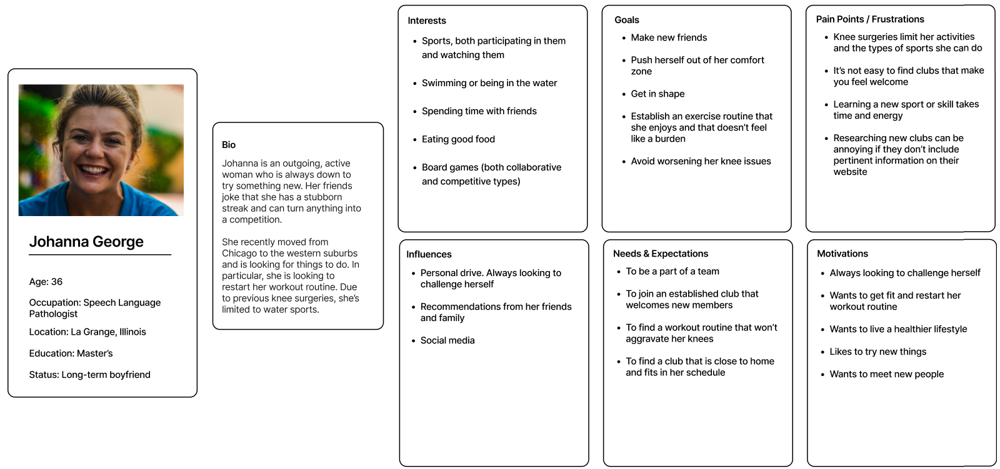

The Chicago Underwater Hockey Team is full of competitive individuals who love a crazy, niche sport. Since people don't grow up playing underwater hockey in gym class or at summer camps, recruiting new players can be difficult. It's oftentimes tough to convince someone to try a sport they've never heard of or seen. It's even more difficult to recruit players when you tell them that underwater hockey is played on the bottom of a pool and they need to hold their breath!

The Chicago Underwater Hockey Team is a not-for-profit organization, and they do not have the budget to build a professional website. A board member requested that our team provide UX/UI recommendations to help improve their website and recruiting efforts.
Our team conducted five user interviews, focusing on three groups:
By interviewing a wide range of individuals, we were able to identify differing user needs. Although the website's primary purpose is for recruitment, new and current players also need resources to help them better understand the game and improve their skills.
We developed a comprehensive survey to better understand what people look for and expect to see on a club website. After analyzing the survey results, we identified the most commonly requested information.
The current underwater hockey website provided only three of the seven items. This lack of information frustrates potential players who are looking for information and they leave the site unsatisfied.
Through user research, we identified three objectives for the Chicago Underwater Hockey site:
Since the primary goal of the site is to aid recruitment efforts, we developed a user persona, Johanna, who represented our target audience.
4 pages
16 pages
The current site included four pages: Home, About, Gallery, and Contact.
Our proposed site quadrupled their content, and it included commonly sought information such as practice times, pricing, and equipment information. It also included resources for current players, including positioning guides, drills, and workouts.
Whether it's the Bears, Cubs, or Blackhawks, Chicagoans love their sports teams. We knew it was important to the Chicago Underwater Hockey team that we represent their Chicago flag on our site. Our color scheme faithfully followed the official city of Chicago colors, while still maintaining accessibility with our color contrast choices.
Through our user interviews, we learned that users found the current Chicago Underwater Hockey logo confusing. We simplified the logo and removed the hard-to-read copy.
After user testing, we significantly revamped our homepage. We realized that our homepage had strayed from the original purpose of the site—recruitment. We needed to reformat the content to make sure that we made it incredibly easy for prospective players to find the information they needed.
For that reason, we made the following iterations:

Next Case Study: Department of Labor